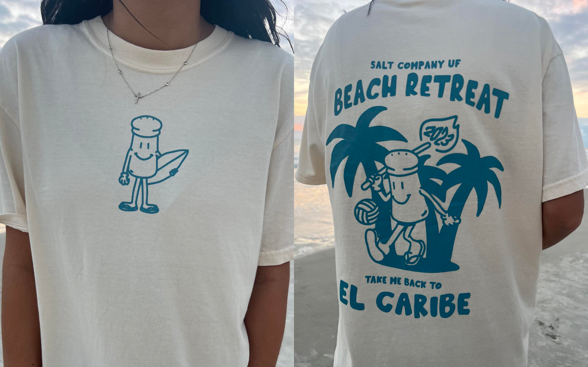
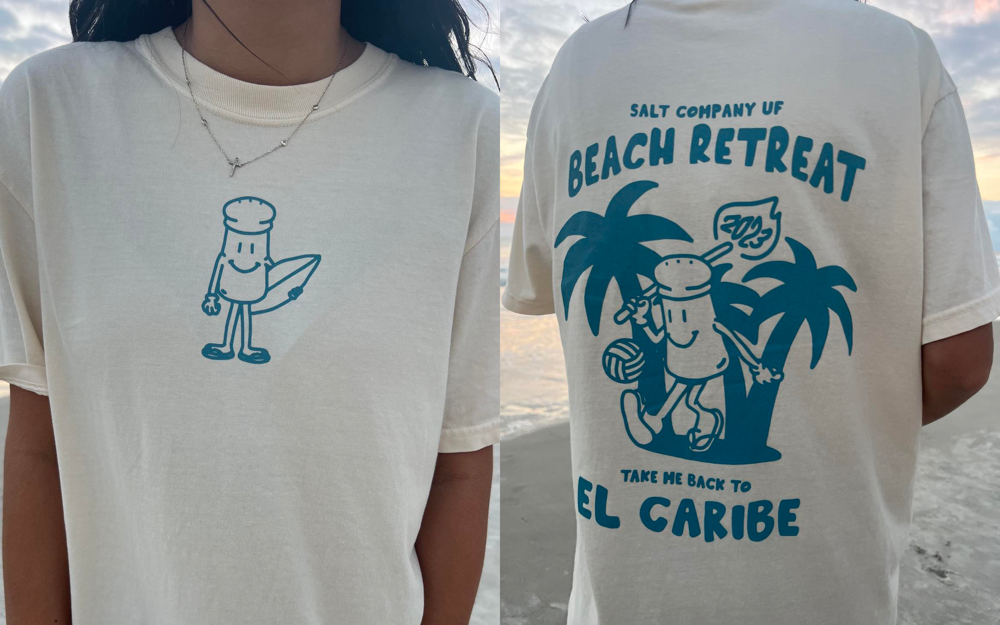
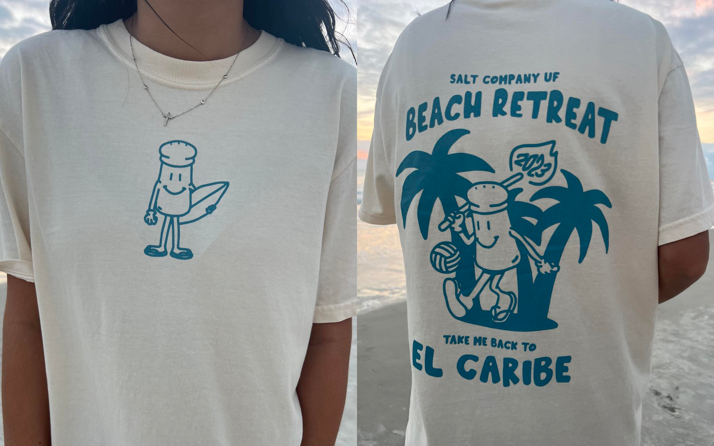

Portfolio
.jpeg) 

The best part of being a creator is touching as many lives as possible with a design. Simply put, that is my goal: creating to help people.
As I pursue my undergraduate education, I intend to develop my perspective as a designer to best portray empathy, originality, and eloquence through what I create. After graduation, I aspire to be a User Experience or User Interface Designer. My perennial goal as a creative professional is to be known in the industry not necessarily for what I have designed, but for those I have helped.
Creativity can change the world.

A thank you is due to so many important people in my life. That being said, thank you to...
- My mom and dad, John and Suzanne
- My sister, Hannah
- My grandparents, Fred, Janet, Alex, and Linda
- My best friend, Sonja
- My roommate, Lana
- My very wonderful professors at UF
- The people I have met through my college ministry, Salt Company
- And all the friends I have made along the way
Without the encouragement, help, and motivation from all of these people, I definitely would not be where I am today. I am so grateful to have such a wonderful team of people ready to help me at any minute I may need it. Here's to two more years of education!